Ako, Hyogo: things to do, food and stays
Ako · Hyogo
Ako
Highlighted on the Hyogo map.
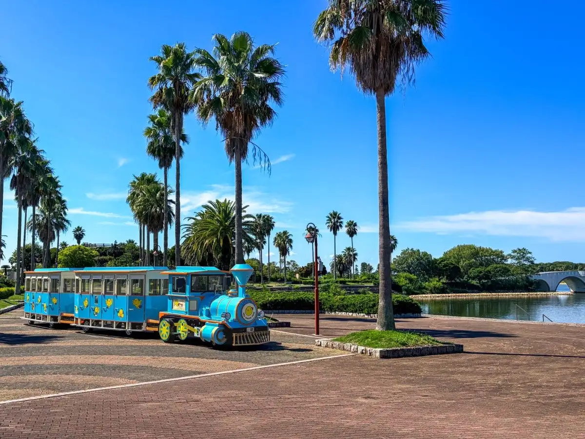
Stay
亀の井ホテル 赤穂
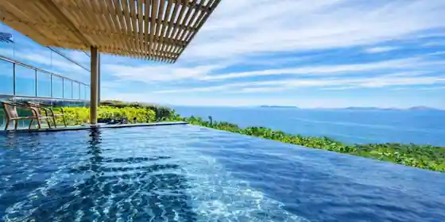
Kame No I Hotel Ako
Hotel at Bishokuwotanoshimu Onsen in Misaki, Ako with open-air baths and scenic views.
潮彩きらら 祥吉
Shio Sai Kirara Shokichi
赤穂温泉 赤穂パークホテル
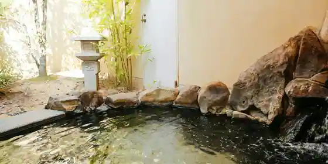
Ako Onsen Ako Park Hotel
Hotel at Ako Onsen in Satsuki, Ako.
鹿久居荘 赤穂
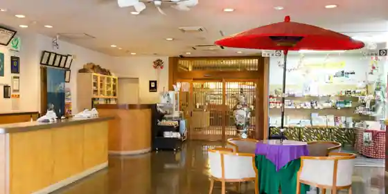
Kakui So Ako
Inn in Satsuki, Ako with scenic views and local seafood dinners.
Kariya RyokanQ（加里屋旅館Q）
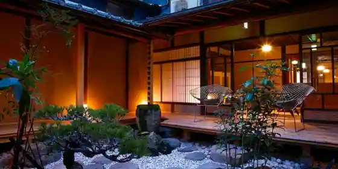
Kariya RyokanQ(Kariya Ryokan Q)
Ryokan inn in Kariya, Ako with a renovated traditional house.
絶景露天風呂の宿 銀波荘
Zekkei Rotenburo No Yado Ginpa So
Inn at Ako Onsen in Misaki, Ako with open-air baths and scenic views.
呑海楼
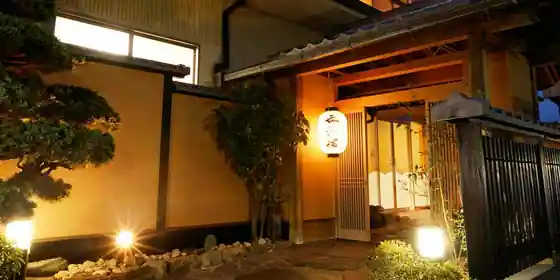
Don Kairo
Inn at Akomisakino Onsen in Misaki, Ako.
瀬戸内の小さなホテル ミサキテラス
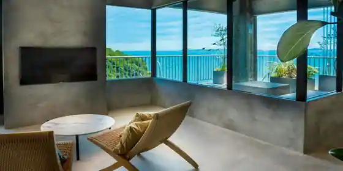
Setochi No Chisa Na Hotel Misaki Terrace
Ｋａｒｉｙａ Ｒｙｏｋａｎ Ｑ（加里屋旅館Ｑ）
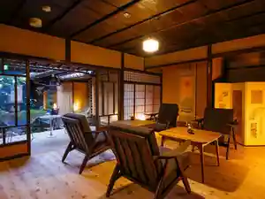
Kariya Ryokan Q(Kariya Ryokan Q)
Ryokan inn in Kariya, Ako with a renovated traditional house.
東横ＩＮＮ播州赤穂駅前
Toyoko INN Banshuako Ekimae
Inn in Kariya, Ako with breakfast available.
ホテルニュー浦島
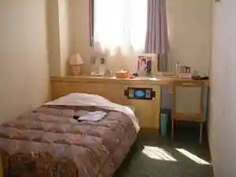
Hotel Nyu Urashima
Hotel in Kariyanakasu, Ako with parking and business travelers.
赤穂ロイヤルホテル
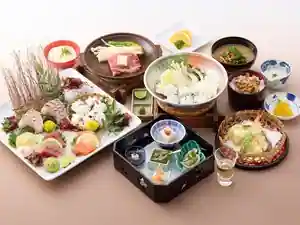
Ako Roiyaru Hotel
Hotel in Kariyanakasu, Ako with business travelers.
Dining
牡蠣小屋りょうちゃん
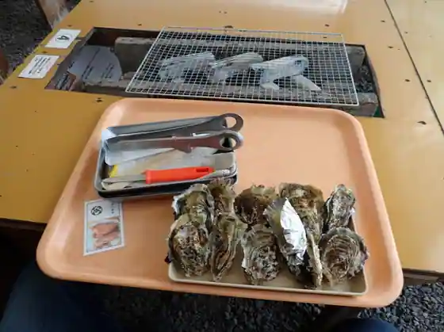
Kaki Koya Ryochan
坂利太
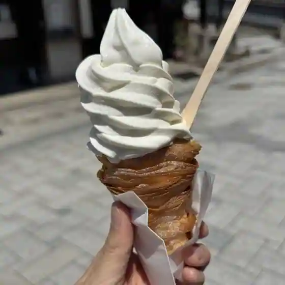
Saka Toshimasu
あこうぱん
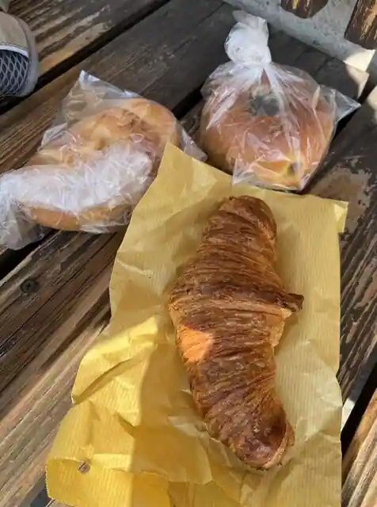
Akopan
かもめ屋 赤穂本店
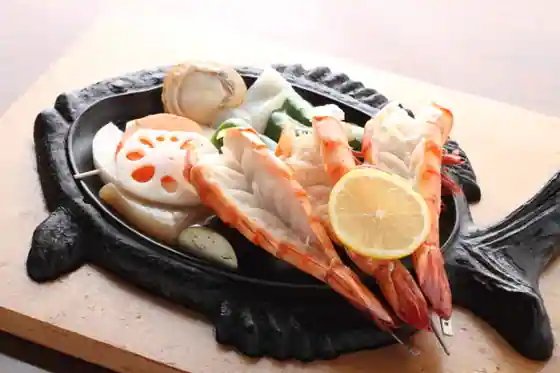
Kamome Ya Ako Hon
SAKURAGUMI
SAKURAGUMI
くいどうらく
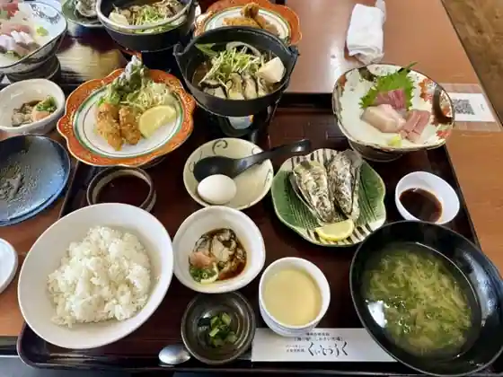
Kuidoraku
ラーメンショップ なまず峠店
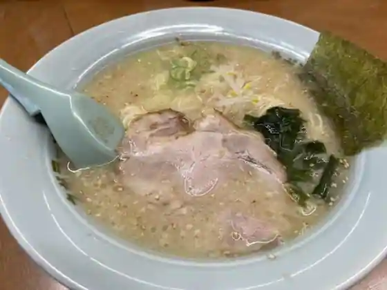
Ramen Shoppu Namazu Toge
壱枚乃絵 海辺のテラスカフェ赤穂店
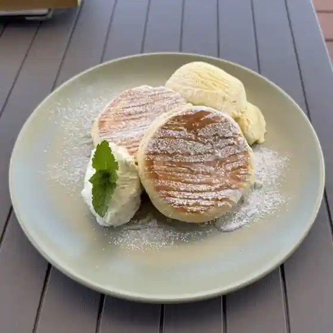
Ichimai No E Umibe No Terrace Cafe Ako
かましま 赤穂店
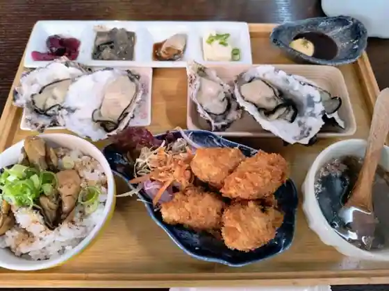
Kamashima Ako
赤穂らーめん麺坊
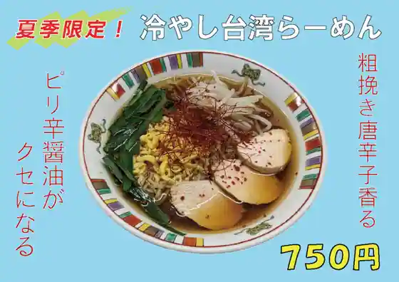
Ako Ramen Men Bo
天馬らぁめん
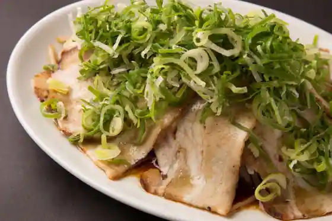
Tenma Ramen
そば処 衣笠
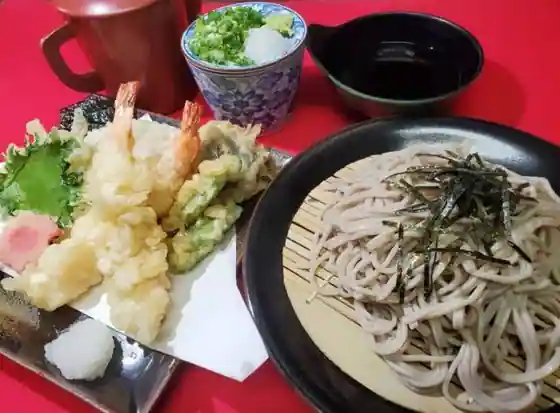
Soba Tokoro Kinugasa
海と坂と
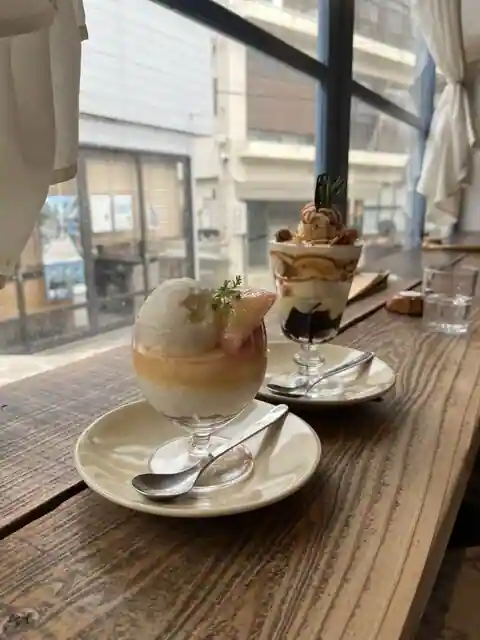
Umi To Saka To
ショーショー
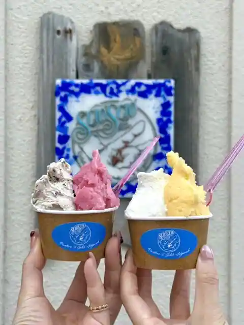
Shosho
ジェラートショップ テテ
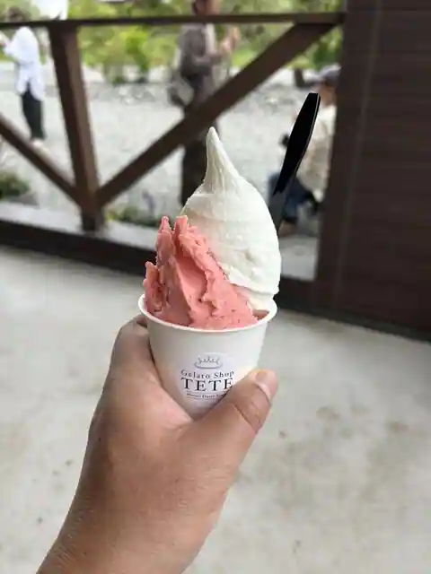
Jieratoshoppu Tete
上町ラーメン
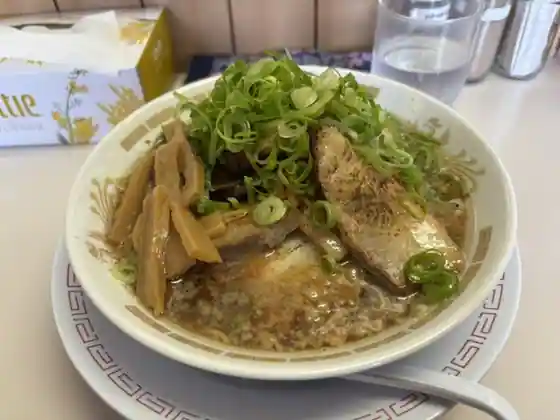
Uemachi Ramen
アマミテラス
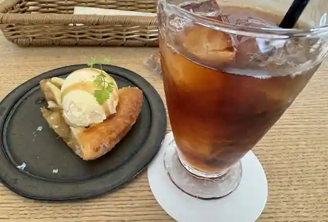
Amami Terrace
廻鮮寿し たいの鯛 赤穂店
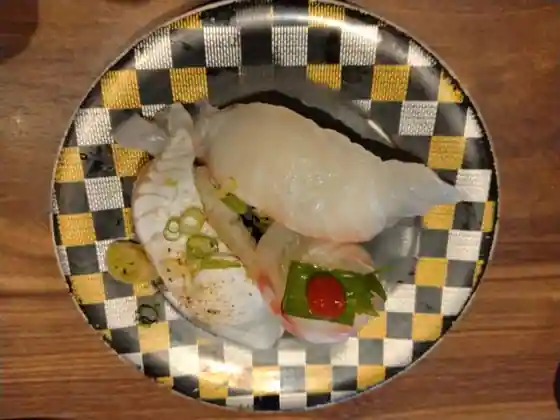
Kaisen Hisashi Shi Taino Tai Ako
暖木
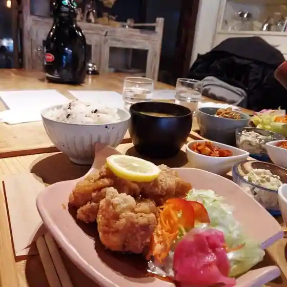
Dan Ki
ダイニング サロン オサキ和カフェ
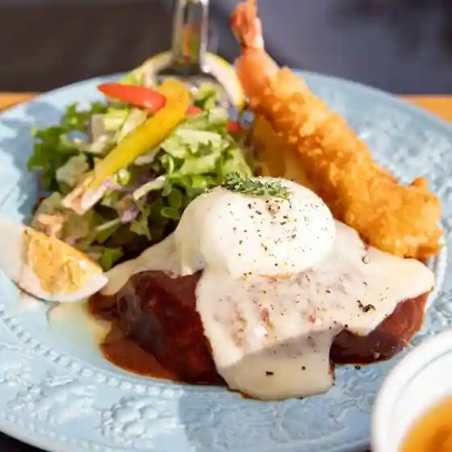
Dining Saron Osaki Wa Cafe
おさきかもめ屋 城西館
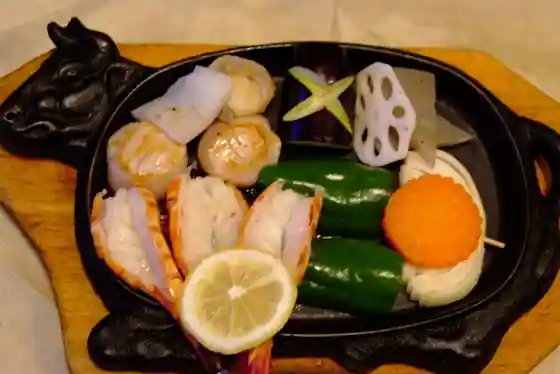
Osakikamome Ya Josai Kan
ミオ エ テンプリーナ
Mio E Tenpurina
Sights
Ako Seaside Park
Waterfront park with lawns, playgrounds, and open Seto Inland Sea views
Kirakira Slope
Scenic slope and viewpoint listed on Hyogo tourism for Ako walks
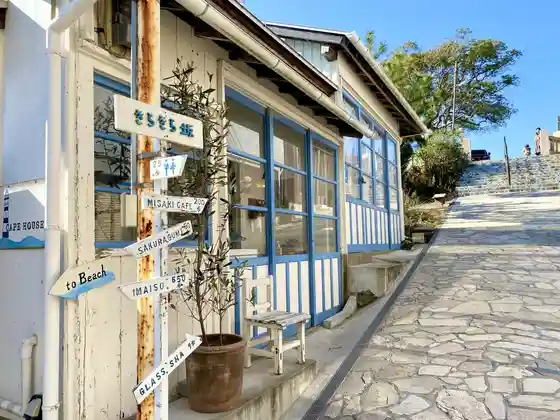
Iwadzuhime Shrine
Local shrine grounds photographed for Hyogo tourism coverage of Ako
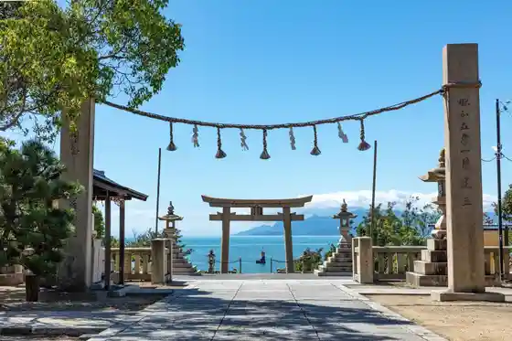
Momoi Museum Unkuyaki
Museum of Unkuyaki ceramics associated with Ako craft traditions
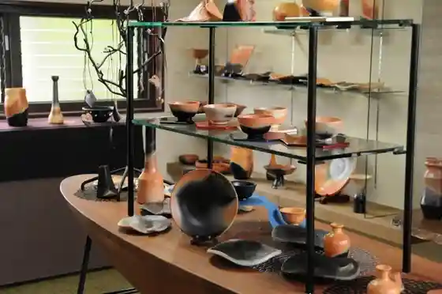